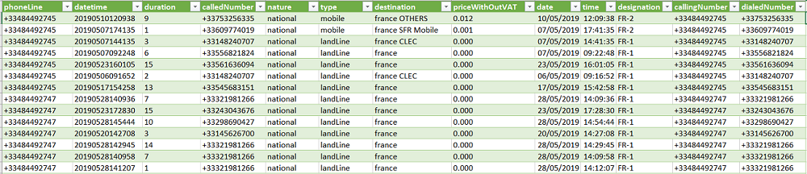

Voici mon blog concernant mon stage en entreprise a Iga voyage qui est un éditeur
et intégrateur
de logiciels pour l'assurance et le voyage situé a a7ix-en-provence.
Ce que j'ai fais durant ce stage :
J'ai eu a faire deux projets durant ce stage de 6 semaines qui concernaient de l'excel et du php ( base de données ).

PROJET Excel
Ce projet consistait a ce que je fasse des tableaux croisés dynamiques avec des relevés téléphoniques provenant de la Tunisie, il m'était donné les quatres derniers chiffre des numeros afin que je puisse filtrer plus rapidement parmis plus de 200 appels passés. J'ai eu 5 prénoms qui correspondaient a ces lignes et je devais donc les interpreter . Une fois cela fait, je devais aussi filtrer les appels qui duraient moins de 15 sec. Enfin j'avais juste à regrouper le tout. Voici un petit bout du tableau pour voir a quoi il ressemble.
On a donc le numero de téléphone, la date et l'heure, la durée de l'appel en minutes, le numéro appelé, la nature ( si c'est national ou bien international), le type de téléphonie c'est a dire si la personne a appelé sur un telephone fixe ou mobile, la destination, et le prix de l'appel.
PROJET Php
Pour ce projet, je devais faire une base de données ou je pourrais y mettre un tableau concerant les relevés du projet excel. Pour ce faire, j'ai dû me renseigner un peu plus sur le php car j'avais besoin d'avoir plus de compétences techniques concercant la base de données. Dans la base il devait donc y avoir : le nom, prénom de la personne, le skype, son mail, une fois tout cela remplit et prêt,il fallait y faire une tableau oû dedans, il y avait les mêmes relevés du projet précédent. Donc une fois tout cela complet il fallait faire une page HTML afin que je puisse integrer la base et que ce soit visible pour le montrer a mon chef.